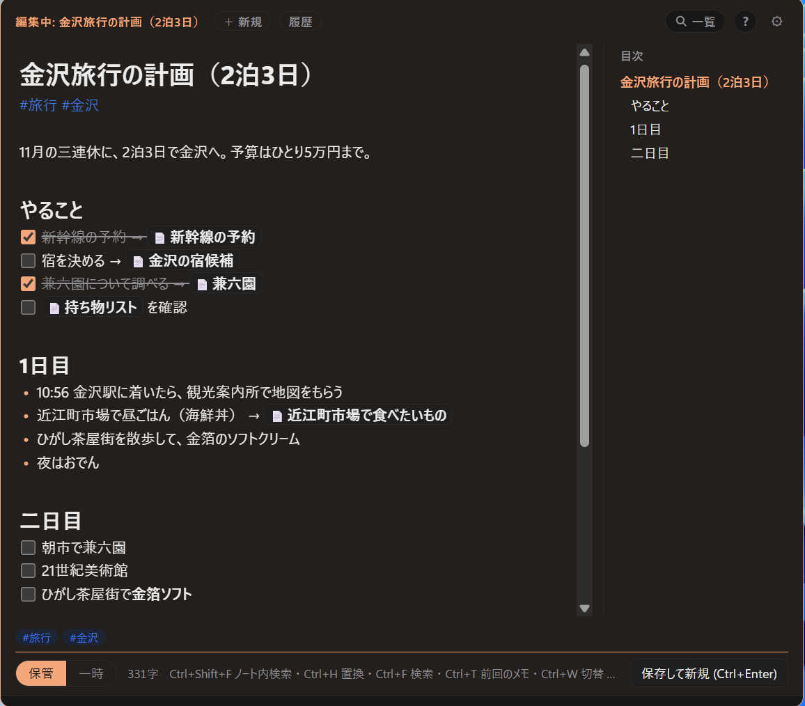
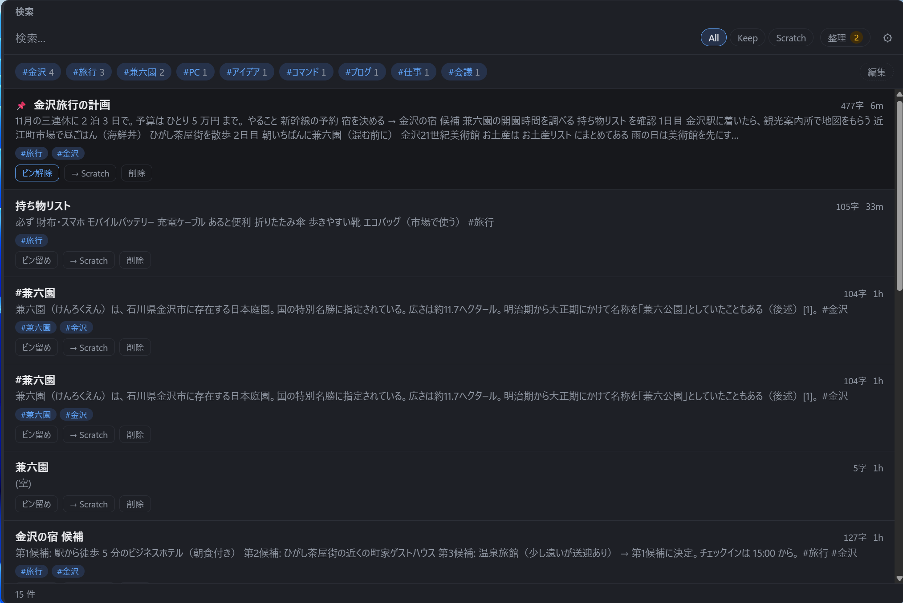
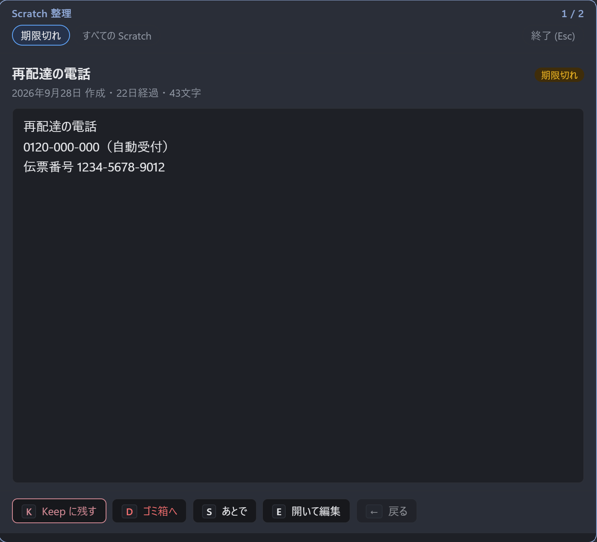
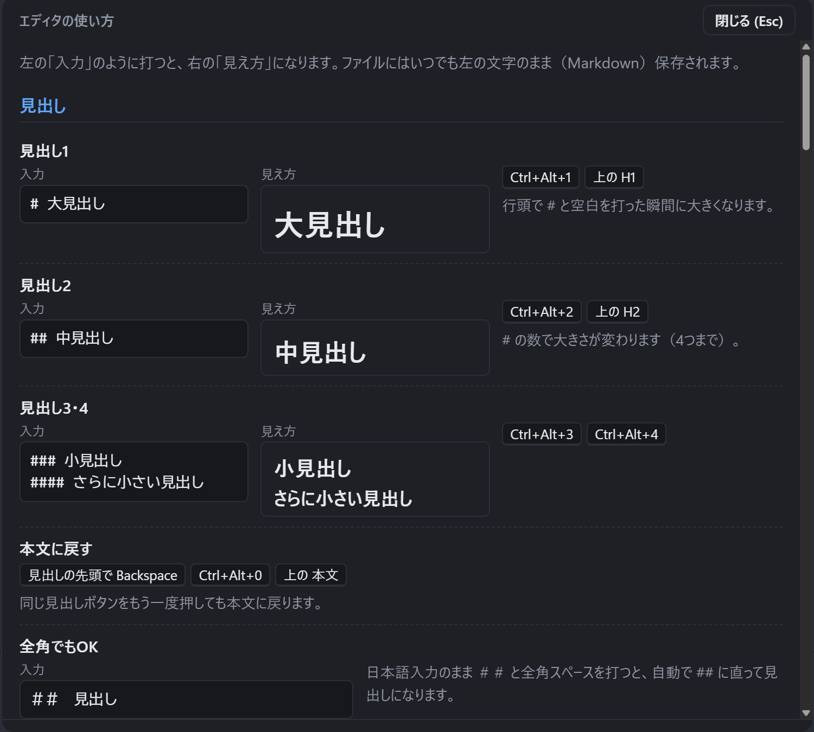

思いついたら、
Ctrl + N。
Rmemo は、どの画面からでもホットキーひとつで呼び出せる Windows 用のメモアプリです。 書いたそばから見出しやリストが整い、閉じれば元の作業にすぐ戻れます。

Windows 10 / 11（64 ビット）・無料・オープンソース（MIT ライセンス）
Store 版はアップデートも自動です。インストーラー版の違いは → よくある質問
書くことだけに集中できる
アプリを探して、開いて、保存場所を選ぶ。そういう手間をなくしました。
どこからでもすぐ開く
Ctrl+N で、今の作業の上に小さな入力窓が開きます。キーは設定で変えられます。
保存を気にしなくていい
書いている途中も自動で保存されます。Ctrl+Enter で保存して閉じれば、元の画面に戻ります。
書いたそばから整う
見出し・リスト・チェックボックス・コードブロックを、Markdown で打ったその場できれいに表示。日本語入力のままでも使えます。
画像も貼れる
スクリーンショットは Ctrl+V で貼るだけ。大きさもドラッグで変えられます。
メモ同士をつなぐ
[[メモ名]] で別のメモにリンク。#タグ で分類して、検索画面で絞り込めます。
エディタとしても本格的
複数カーソル、行の移動、見出しの折りたたみ、目次、検索・置換。VS Code に慣れた手でもそのまま使えます。
残すメモと、使い捨てのメモ
ちょっとしたメモが積もって一覧が埋まる、という悩みを、メモを 2 つに分けて解決します。 Ctrl+L でいつでも切り替えられます。
Scratch
電話番号、買い物リスト、一時的なコピー。とりあえず書く場所です。古くなると印が付き、整理画面で 1 件ずつ「残す / 捨てる」を決められます。
Keep
あとで読み返したいメモ。手順書、アイデア、調べたことのまとめ。ピン留めでよく使うメモを一番上に置けます。
メモは、ただのテキストファイル
メモは Documents\Rmemo に、1 メモ = 1 つの .md ファイルとして保存されます。
独自の形式やデータベースはありません。
アプリがなくても読める
メモ帳でも VS Code でも開けます。Rmemo をやめても、メモはそのまま残ります。
複数の PC で同期
保存フォルダを Google ドライブなどに置けば、別の PC でも同じメモを使えます。 設定方法
外部に送信しない
アカウント登録は不要です。メモはあなたの PC の中だけに保存されます。
画面
クリックすると大きく表示されます。








よく使うキー
すべての機能と操作は、アプリの中で F1 を押すと確認できます。
| やりたいこと | キー |
|---|---|
| 入力窓を開く / 閉じる | Ctrl+N |
| 保存して閉じる | Ctrl+Enter |
| 前回のメモに戻る | Ctrl+Shift+T |
| Scratch / Keep を切り替え | Ctrl+L |
| メモを探す | Ctrl+Shift+F |
| リンクを付ける | Ctrl+K |
| 同じ語を次々に選ぶ | Ctrl+D |
| 今日の日付を入れる | Ctrl+; |
| 設定 | Ctrl+, |
よくある質問
無料ですか？
はい、無料です。広告もありません。ソースコードは MIT ライセンスで GitHub に公開しています。
Microsoft Store 版とインストーラー版（setup.exe）の違いは？
機能は同じです。Store 版は Microsoft Store からインストールでき、アップデートも Store が自動で行います。インストーラー版は、アプリの中に出る「更新」ボタンでアップデートします。迷ったら Store 版がおすすめです。
インストーラー版で「Windows によって PC が保護されました」と出ます
インストーラー版をダウンロードした場合に表示されることがあります。「詳細情報」→「実行」でインストールできます。Microsoft Store 版ではこの表示は出ません。
インストーラー版から Store 版に乗り換えるには？
「設定」→「アプリ」からインストーラー版の Rmemo をアンインストールしてから、Store 版をインストールしてください。両方を入れると、片方しか起動しません。メモのフォルダはアンインストールしても消えないので、Store 版でもそのまま使えます。
窓が閉じてしまいます。どこにいますか？
Rmemo はタスクトレイに常駐しています。Ctrl+N か、トレイのアイコンをクリックすると開きます。
アンインストールするとメモは消えますか？
消えません。メモのフォルダ（既定では Documents\Rmemo）はそのまま残ります。
不具合の報告や要望はどこに送ればいいですか？
GitHub の Issues にお願いします。